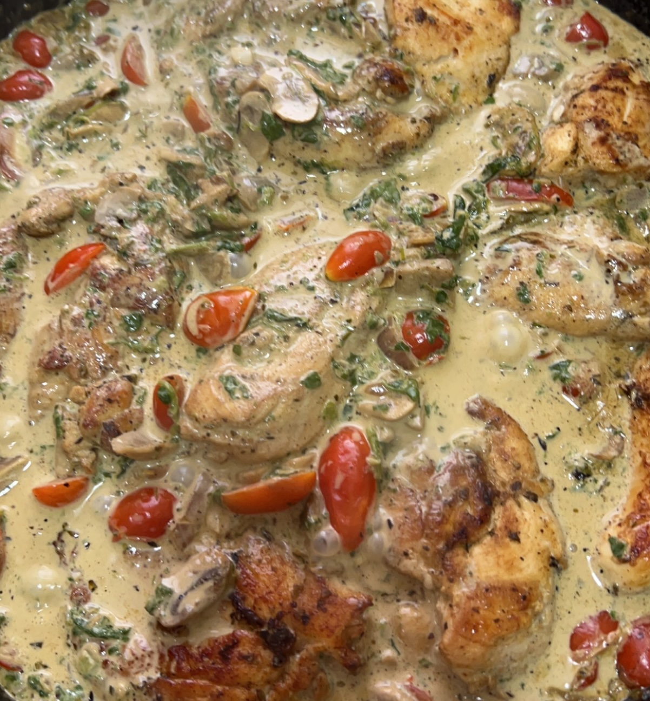

Creamy Chicken Tuscan

Ingredients
- Chicken Tenders
- Spices:
- Salt
- Pepper
- Paprika
- Onion Powder
- Oregano
- Olive Oil
- Fresh Mushrooms
- Fresh Spinach
- Cherry Tomato
- Diced Onions
- Thinly Sliced Garlic Clove
- Lemon
- Cooking Cream
- Shredded Mozzarella Cheese
Steps
- Gather all your ingredients.
- Mix the chicken tenders with olvie oil and all 5 spices.
- Turn medium heat on the pan and cook the chicken tenders until golden.
- Take out the chicken tenders in a plate and in the same pan put the minced garlic and onions along with a squeeze from our lemon.
- Cook the onions until golden.
- Add the mushrooms sliced and the spinach leaves.
- When the mushrooms get brown add the cherry tomato.
- Stir everything for 1-2 mins and then add the cooking cream.
- As the cooking cream starts to boil lower the heat and add the shredded mozzarella.
- As the mozzarella melts throughout the cooking cream give it a stir and add back the chicken tenders to the pan.